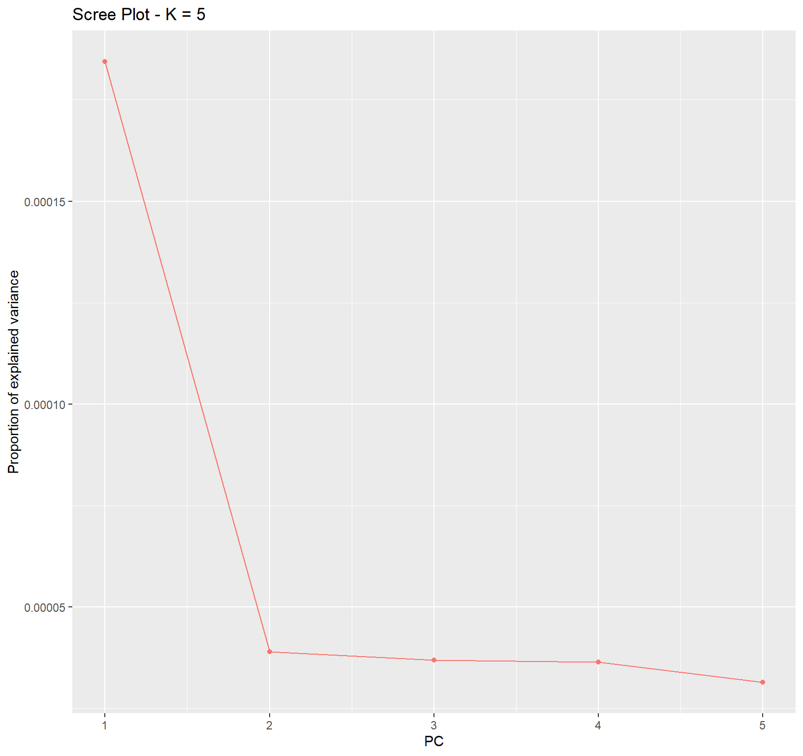
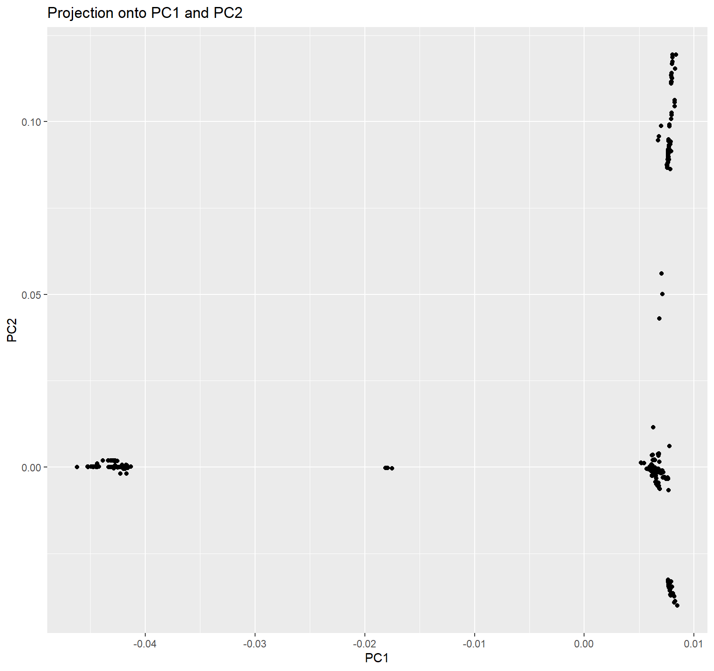
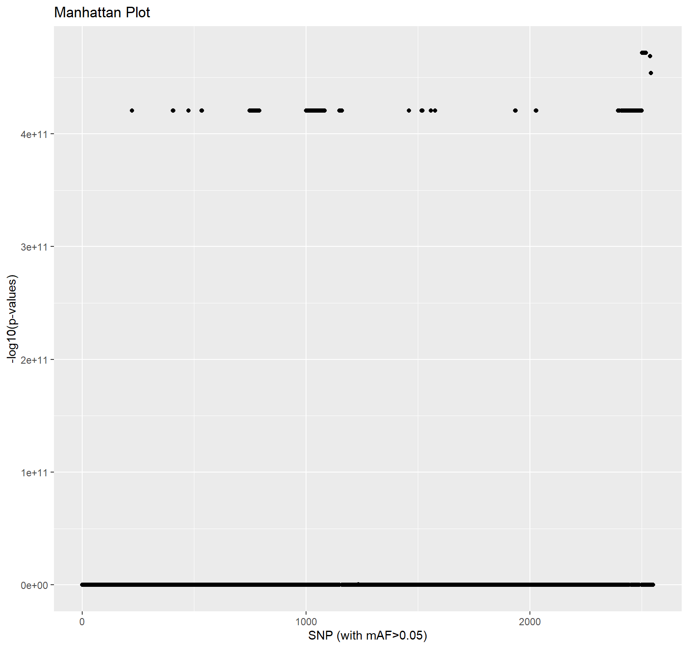
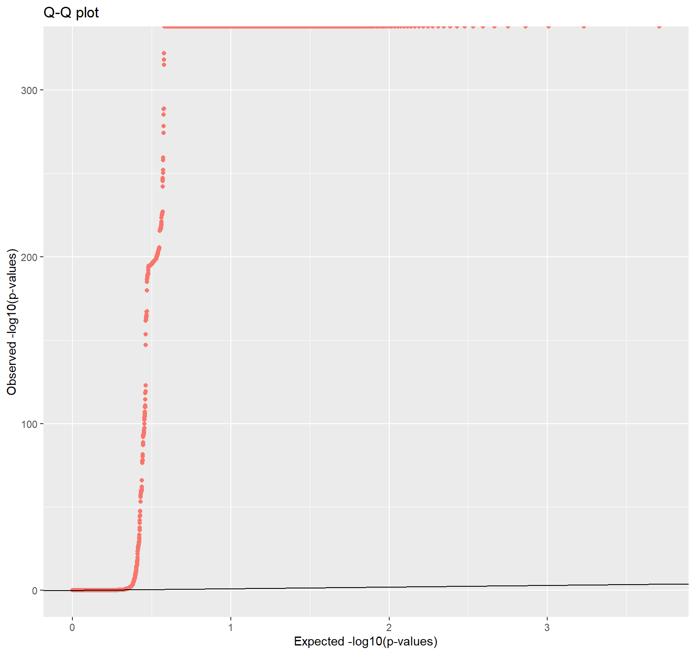

Last updated: 2020-08-30
Checks: 6 1
Knit directory: Covid-19-genomic-variation/
This reproducible R Markdown analysis was created with workflowr (version 1.6.1). The Checks tab describes the reproducibility checks that were applied when the results were created. The Past versions tab lists the development history.
The R Markdown is untracked by Git. To know which version of the R Markdown file created these results, you’ll want to first commit it to the Git repo. If you’re still working on the analysis, you can ignore this warning. When you’re finished, you can run wflow_publish to commit the R Markdown file and build the HTML.
Great job! The global environment was empty. Objects defined in the global environment can affect the analysis in your R Markdown file in unknown ways. For reproduciblity it’s best to always run the code in an empty environment.
The command set.seed(20200412) was run prior to running the code in the R Markdown file. Setting a seed ensures that any results that rely on randomness, e.g. subsampling or permutations, are reproducible.
Great job! Recording the operating system, R version, and package versions is critical for reproducibility.
Nice! There were no cached chunks for this analysis, so you can be confident that you successfully produced the results during this run.
Great job! Using relative paths to the files within your workflowr project makes it easier to run your code on other machines.
Great! You are using Git for version control. Tracking code development and connecting the code version to the results is critical for reproducibility.
The results in this page were generated with repository version 4d0f27d. See the Past versions tab to see a history of the changes made to the R Markdown and HTML files.
Note that you need to be careful to ensure that all relevant files for the analysis have been committed to Git prior to generating the results (you can use wflow_publish or wflow_git_commit). workflowr only checks the R Markdown file, but you know if there are other scripts or data files that it depends on. Below is the status of the Git repository when the results were generated:
Ignored files:
Ignored: .Rproj.user/
Untracked files:
Untracked: analysis/Covid_genome_Scan.Rmd
Untracked: analysis/Spatial_structure.Rmd
Untracked: data/2019-nCoV_total_10_04_2020cnv.gds
Untracked: data/2019-nCoV_total_10_04_2020snps.gds
Untracked: data/2019-nCoV_total_17_04_2020snps.gds
Untracked: data/2019-nCoV_total_2020-04-17_cnr.gds
Untracked: data/PCACNR.html
Untracked: data/PCA_covid19_geo_popres_coord_update_country_code_13_04.RData
Untracked: data/Virus_genome_Scan.RData
Unstaged changes:
Modified: analysis/_site.yml
Modified: analysis/about.Rmd
Modified: analysis/index.Rmd
Modified: analysis/license.Rmd
Note that any generated files, e.g. HTML, png, CSS, etc., are not included in this status report because it is ok for generated content to have uncommitted changes.
There are no past versions. Publish this analysis with wflow_publish() to start tracking its development.
In line with the spatial genetic structure analysis, and to detect the genome regions under selection or involved in adaptation, we carried out the PCA-based genome scan on the genome-wide SNPs using pcadapt (Duforet-Frebourg, et al. 2016; Luu, et al. 2017). We filtered the SNPs with minor allele frequency (MAF) >0.05 and kept 5 principal components for use of calculating the Mahalanobis distance to identify the outliers as the candidate loci that might be under selection. We set the threshold at alpha <4E-11 to identify the outliers. In addition, we also carried out the genome scan for all variant sites (CNRs, the copy number of references) to see which genes were under selection. The analysis was carried out using the pcadapt package (Luu, et al. 2017).
 Fig. 1 Screen plot for the variations Fig. 1 shows that the first 5 PCs account for almost the largest variance of the total variations based on the whole genome wide SNPs.  Fig. 2 Score plot for the variations
Fig. 2 is also the genetic structure presented in “Spatial genetic structure of SARS-CoV-2” .  Fig. 3 Manhattan plot for the variations with a threshold of 4E-11 using the first 5 PCs
This plot presents the -log(q-value) of SNPs under selection. Detailed list of the SNPs corresponding to the genes and positions is presented in our MS.
 Fig. 4 qq-plot for the variations
The genomic position of SARS-Covid-2 under selection:
[1] 3 5 12 21 23 30 32 33 35 53 54 67 68 70 78
[16] 83 85 88 89 94 97 99 108 109 110 111 112 119 127 133
[31] 134 135 136 137 138 140 143 144 146 149 151 152 154 155 160
[46] 161 163 165 167 172 178 180 181 197 211 217 218 223 232 233
[61] 234 242 244 245 256 257 261 264 272 274 275 276 278 280 285
[76] 288 292 297 302 303 317 318 324 328 329 336 339 344 345 354
[91] 356 361 362 363 368 369 372 376 380 383 385 389 394 395 396
[106] 397 405 406 407 408 413 450 472 475 490 491 496 497 503 505
[121] 523 527 529 532 534 535 536 549 552 553 554 559 562 580 581
[136] 582 586 590 592 624 638 642 654 657 658 673 675 678 680 687
[151] 688 689 696 704 708 714 718 722 723 724 730 738 748 749 753
[166] 754 756 757 759 760 761 762 764 765 767 769 771 773 776 777
[181] 778 779 782 783 784 785 787 789 790 791 792 798 799 801 802
[196] 805 808 812 818 819 833 851 853 855 856 863 864 867 872 876
[211] 878 879 887 894 896 907 909 914 915 917 920 926 942 945 949
[226] 950 952 953 963 967 971 981 996 998 999 1000 1001 1002 1003 1004
[241] 1005 1008 1010 1012 1013 1014 1015 1016 1019 1020 1024 1026 1027 1028 1029
[256] 1037 1044 1045 1046 1048 1051 1058 1063 1066 1068 1069 1076 1077 1080 1081
[271] 1083 1087 1092 1103 1108 1115 1116 1118 1119 1120 1126 1139 1150 1151 1152
[286] 1153 1154 1155 1156 1157 1158 1159 1160 1164 1165 1166 1176 1178 1181 1184
[301] 1186 1187 1188 1191 1198 1201 1204 1207 1210 1219 1222 1223 1224 1225 1227
[316] 1231 1234 1235 1236 1239 1244 1245 1250 1266 1273 1276 1280 1284 1288 1297
[331] 1299 1306 1310 1311 1322 1327 1330 1332 1336 1344 1347 1348 1349 1355 1356
[346] 1361 1371 1372 1375 1379 1381 1384 1385 1393 1400 1401 1404 1412 1423 1426
[361] 1428 1438 1441 1445 1446 1461 1462 1465 1469 1470 1471 1477 1480 1484 1491
[376] 1507 1510 1514 1516 1518 1519 1520 1521 1522 1525 1527 1528 1533 1534 1535
[391] 1536 1537 1543 1548 1550 1555 1557 1558 1560 1563 1566 1568 1574 1576 1577
[406] 1584 1590 1605 1622 1627 1628 1640 1642 1651 1652 1660 1662 1666 1675 1677
[421] 1682 1694 1702 1703 1705 1708 1720 1732 1744 1760 1764 1771 1772 1773 1780
[436] 1787 1789 1797 1803 1807 1819 1821 1828 1830 1837 1839 1846 1856 1858 1861
[451] 1862 1869 1872 1874 1875 1882 1885 1887 1890 1891 1892 1893 1901 1907 1909
[466] 1912 1921 1934 1935 1936 1937 1945 1947 1949 1951 1957 1958 1962 1964 1965
[481] 1974 1993 1995 1997 2004 2008 2010 2020 2022 2023 2027 2028 2029 2039 2043
[496] 2044 2046 2057 2062 2067 2068 2076 2081 2090 2097 2099 2111 2113 2121 2122
[511] 2129 2130 2131 2145 2146 2151 2161 2167 2172 2177 2181 2192 2193 2200 2201
[526] 2204 2205 2225 2226 2227 2228 2230 2231 2233 2234 2238 2247 2251 2255 2259
[541] 2261 2275 2277 2283 2285 2286 2287 2288 2289 2293 2294 2295 2296 2297 2298
[556] 2302 2306 2308 2311 2312 2313 2317 2320 2335 2339 2347 2350 2361 2366 2372
[571] 2373 2379 2380 2384 2387 2394 2395 2396 2397 2398 2399 2400 2405 2406 2410
[586] 2411 2412 2413 2414 2415 2416 2418 2419 2420 2422 2423 2424 2425 2426 2429
[601] 2431 2432 2433 2434 2435 2437 2438 2439 2440 2441 2442 2443 2445 2446 2447
[616] 2448 2449 2450 2451 2452 2455 2456 2457 2458 2461 2462 2463 2464 2465 2466
[631] 2467 2469 2470 2471 2472 2473 2474 2477 2478 2479 2481 2482 2483 2485 2486
[646] 2488 2489 2490 2491 2492 2493 2494 2495 2496 2497 2498 2499 2501 2502 2503
[661] 2505 2508 2511 2512 2513 2514 2516 2519 2524 2538 2541 2545 2546Detailed list of the SNPs corresponding to the genes and positions is presented in our MS.
This is a method associated with principal components. Therefore, this approach identifies loci that contribute to the genetic sturtcure of 3,736 complete genomes SARS-Covid-2.
R version 3.6.1 (2019-07-05)
Platform: x86_64-w64-mingw32/x64 (64-bit)
Running under: Windows 10 x64 (build 19041)
Matrix products: default
locale:
[1] LC_COLLATE=English_United Kingdom.1252
[2] LC_CTYPE=English_United Kingdom.1252
[3] LC_MONETARY=English_United Kingdom.1252
[4] LC_NUMERIC=C
[5] LC_TIME=English_United Kingdom.1252
attached base packages:
[1] stats graphics grDevices utils datasets methods base
other attached packages:
[1] ggplot2_3.2.1 qvalue_2.18.0 pcadapt_4.3.1 workflowr_1.6.1
loaded via a namespace (and not attached):
[1] Rcpp_1.0.2 plyr_1.8.4 compiler_3.6.1 pillar_1.4.2
[5] later_1.0.0 git2r_0.26.1 tools_3.6.1 digest_0.6.21
[9] viridisLite_0.3.0 lifecycle_0.1.0 jsonlite_1.6 evaluate_0.14
[13] tibble_2.1.3 gtable_0.3.0 pkgconfig_2.0.3 rlang_0.4.6
[17] yaml_2.2.0 xfun_0.11 httr_1.4.1 withr_2.1.2
[21] stringr_1.4.0 dplyr_0.8.3 knitr_1.26 maps_3.3.0
[25] vctrs_0.3.1 htmlwidgets_1.5.1 fs_1.3.1 cowplot_1.0.0
[29] rprojroot_1.3-2 grid_3.6.1 tidyselect_0.2.5 data.table_1.12.6
[33] glue_1.3.1 R6_2.4.0 plotly_4.9.1 PCAviz_0.3-37
[37] rmarkdown_2.1 tidyr_1.0.0 purrr_0.3.3 reshape2_1.4.3
[41] magrittr_1.5 splines_3.6.1 backports_1.1.5 scales_1.0.0
[45] promises_1.1.0 htmltools_0.4.0 assertthat_0.2.1 countrycode_1.1.0
[49] colorspace_1.4-1 httpuv_1.5.2 labeling_0.3 stringi_1.4.3
[53] lazyeval_0.2.2 munsell_0.5.0 crayon_1.3.4